Project Context
Our client had two website platforms they wanted to use. One website platform was used as their main website and another website was used for orders. At the time, they were in the process of integrating a new order platform and they were planning on getting rid of their old order platform.
Our client wanted us to streamline and redesign both websites to make them more user friendly. They wanted to update their main website to add COVID-19 information and they also wanted us to get rid of any repetitive information that was already existent on the website.
Design Process
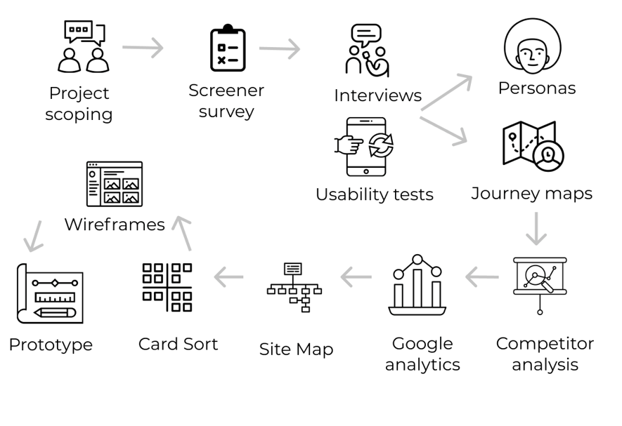
Designed by Team Member B
Project Scoping
Initially, our client had proposed three projects we could choose from. Due to our timeline, we could not complete every single project and we decided to focus on two of the projects.
The first project was to find a way to allow customers to make indoor reservations and prepay their beverages/food. Ideally, the goal was to organize everything through their point of sales
The second project was reorganizing the client’s websites to highlight their delivery, curbside and indoor patio seating options. At the time, the client had felt that their website’s flow was clunky and the information was not clear.
Unfortunately, due to rising COVID-19 cases, Michigan placed a law stating that indoor dining was not allowed. We still went ahead with both projects. However, we kept the new laws in mind as we changed the website.
Screener Survey
After we decided on our project, my group member Team Member B, created a screener survey to help the group understand who the customers were, their experiences at the taproom and on the taproom's website. Here were some of the things we learned:
Many customers resided in Ann Arbor and other cities within the state of Michigan(We already knew this from earlier datasets from our client, but it was good to reaffirm this piece of knowledge)
Customers were between the ages of 21 to 30 and were predominantly female (We already knew this from earlier datasets from our client, but it was good to reaffirm this piece of knowledge)
Since COVID-19 begun, customers continued to interact with Bløm Meadworks for curbside pick-up and delivery options
Most customers visited the website for any updates
User Interviews
Team Member A created our interview guide. From there, we were able to interview 8 different customers. The users were returning customers who often bought the company’s products. The interview questions focused on asking how users how they found the taproom, how often they used the website, and their spending habits before COVID-19 begun and during COVID-19. We also asked users to perform a usability test during the interviews as well. Some of the main findings were:
Customers were big fans of the product and the taproom itself
Customers learned about the company through word-of-mouth or by walking past the physical building
Customers had some difficulty navigating through different parts of the website such as the ordering page, contact information, etc
Most customers visited the website for COVID-19 information and for placing delivery and pick-up orders
Affinity Wall
After conducting all of the interviews, my team leader, Team Member A, helped create an affinity wall with several different categories. My entire team placed all of our findings into different categories. Some of the major takeaways were:
Customers knew how to navigate through some parts of the website to find certain things (like the menu)
Customers engaged with the company through social media
Customers frequently visit the website for up-to-date information
User Personas
After conducting the interviews my team members, C and D were able to create three user personas from our findings on our affinity wall. They found three types of users: the curbside pickup user, the experimental customer and the on-the-go customer.
 Curbside Pickup Customer- Ashley Rome
Curbside Pickup Customer- Ashley Rome
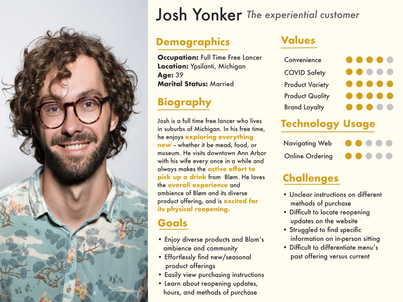
The Experimental Customer- Josh Yonker
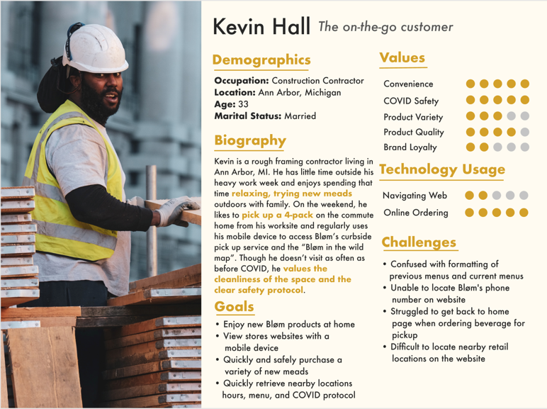
On-the-Go Customer- Kevin Hall
Journey Mapping
Team Member B, C, and D were then able to create three journey maps from the user personas. These journey maps focused on how users found the website, how they used the website, what type/s of information they searched for, and what they planned to do after they finished visiting the website.
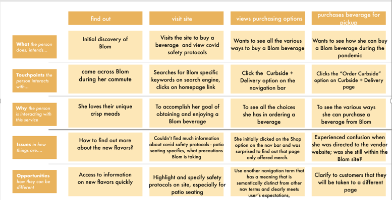
Curbside Pickup Customer Journey Map- Ashley Rome
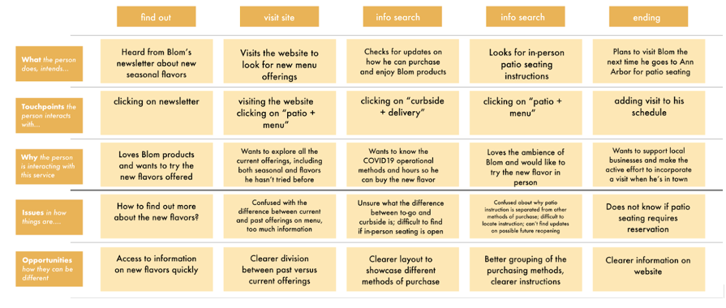
The Experimental Customer Journey Map- Josh Yonker
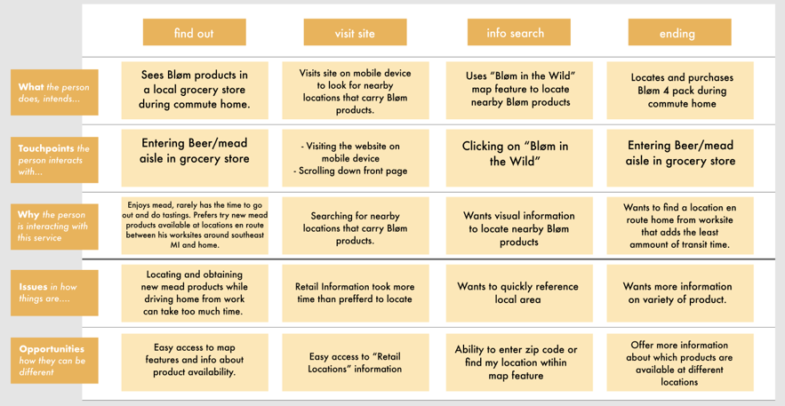
On-the-Go Customer Journey Map- Kevin Hall
Competitive Analysis
After creating the journey maps, I did a competitive analysis of our client and four other establishments in the Ann Arbor area. I learned about each establishment's site map, their prevention methods against COVID-19, the location of for COVID-19 information and even general business practices.
| Sqaurespace |
Squarespace for main page, use Square for ordering for pickup and for in-person seating |
Use Square for main website and for their wine shop |
Square for home page, Toast Tab for ordering page |
Unknown for main page, use Square for in-person ordering and for take out |
| On Patio + Menu page |
Located on order page |
Located on menu page |
Located at bottom of home page with link |
Located on home page right when customer loads |
| Second tab called “Patio + Menu” |
Menu page is combined with order page |
First tab on their homepage |
First tab on their homepage |
Main menu on homepage; Entire menu kept on a separate link |
| Top Left Hand Corner |
Non-existent. The only “home button” that is found is on their ordering page and it leads the customer back to order page’s main page |
Top Left Hand Corner- both their name and home button |
Top Left Hand Corner. Company Logo for every page except Toasttab. |
Top Left Hand Corner. Company logo for every page |
Google Analytics
I also had an opportunity to analyze the company's Google Analytics account to understand which pages people visited the most, how they navigated through the website, how much time they spent on each page, how users found the website, and common search terms as well. Here were some of the key findings.
Most website traffic came from mobile users, then desktop users and finally tablet users
The most common landing pages users entered through were the home page, order page, and about us page
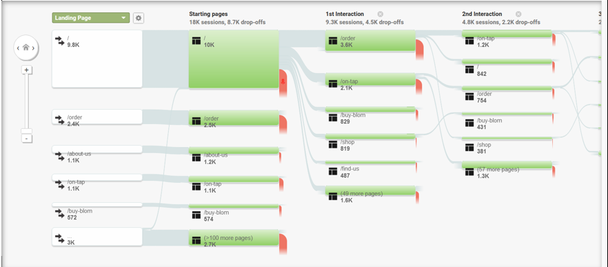
Google Analytics- Top Landing Pages
Users exited through the following pages the most: order page, home page and menu page
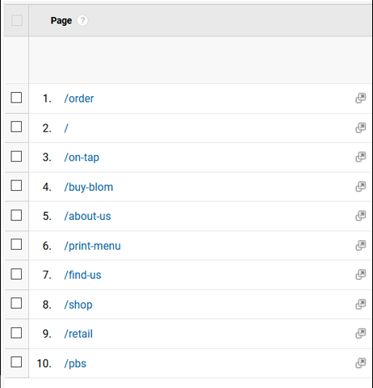
Google Analytics- Top Exiting Pages
Users found the website by using a search engine, by directly typing out the URL the address bar or through social media links like Facebook and Instagram
Users spent the most time on Order and Menu Pages more than any other pages
The most common search terms were Bløm Meadworks, Bløm Ann Arbor, Bløm, Mead Ann Arbor and Bløm Meadworks Ann Arbor
Even though most of the website's visitors used the mobile version, we only designed a desktop version for both websites. Both platforms automatically turned any desktop design into a mobile version. We wanted to create a mobile version for both websites, but due to time constraints, we were unable to do so.
Site Map
After analyzing all of the results, team member A created a site map that considered all of the following findings. A link to our site map can be found below. Here were some insights we uncovered:
Card Sorting
After creating the site map team member C and team member A conducted a card sorting. They did this to help understand how to organize and restructure the website. Even though my team understood “what” needed to be changed, we needed to understand the information architecture users felt the most comfortable with. Based on the results, this was our new navigation bar:
Buy Bløm
- Dropdown Menu: Methods of Purchase
- Dropdown Menu: Locate Nearby Retail Store
- Dropdown Menu: Merchandise
- Dropdown Menu: Gift Cards
- Dropdown Menu:Bløm Bundles
Store Information
- Dropdown Menu: Locate & Contact Us
- Dropdown Menu: COVID-19 Measures
Menu (No Dropdown Menu)
Community
- Dropdown Menu: Membership
- Dropdown Menu: Events
About Bløm
- Dropdown Menu: Story of Bløm
- Dropdown Menu: Blog
- Dropdown Menu: Local Ingredients Sourcing
- Dropdown Menu: PBS Video Special
Wireframes
After gathering the research, our team began creating the wireframes. Our team was divided into two smaller teams. One team focused on the main website, which used Squarespace as its platform. The other team, which consisted of team members A, C and myself, focused on the order page. The order page used Square as its platform. My main task was to understand Square and assist in creating mid-fidelity mockups for this platform. Initially, our team designed a low-fidelity mockup of the navigation bar for the main website (Squarespace platform) and the ordering page (Square platform), and our client approved of the design.
After that, team members A, C and myself began to work on the mid-fidelity mockups. Throughout this process, my job was to reconfirm whether certain design ideas were possible on Square’s platform as the site had specific design limitations. After creating the mid-fidelity mockups for the main website and the order website, my entire team, excluding me, worked on creating the final wireframes for the client. My main task was making sure that the final wireframes lined up with Square’s capabilities. Team members A and C then worked on putting all of the wireframes together into one prototype.
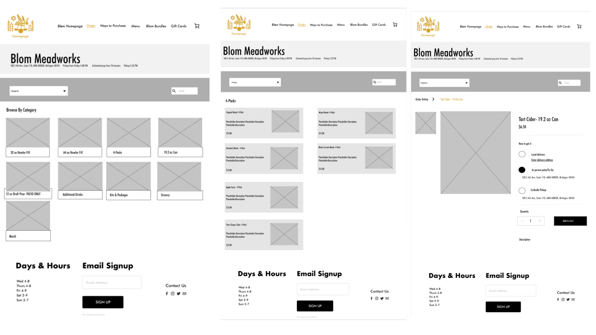
Square Midfidelity Mockups
Squarespace Midfidelity Mockups
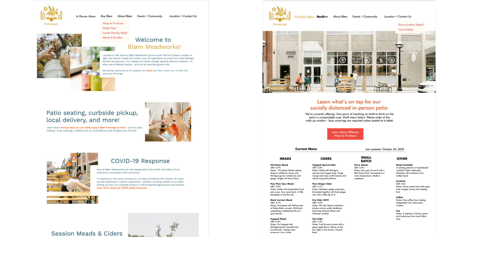
Final Fidelity Mockup- Square
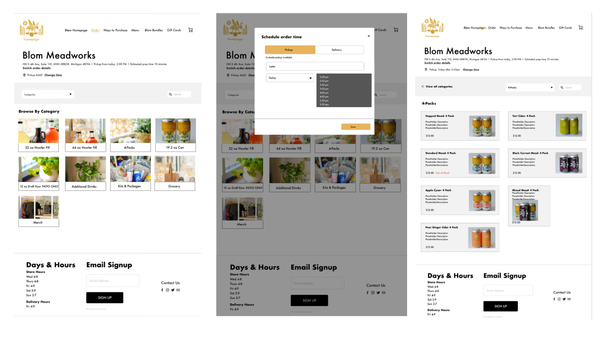
Final Fidelity Mockup- Squarespace
User Testing
After creating the final wireframes, we decided to last-minute user testing through a website called “Usertesting.com”. We were able to get six people to do an unmoderated usability test of our prototype. Our team found that:
Customers were able to find important information like the order page and menu
Customers felt confused about the “Merchandise” page that was added
Customers felt slightly uncomfortable jumping between pages on the prototype
Discussion, Takeaways and Next Steps
Overall, this project taught me a lot about UX research and I had an opportunity to learn from my colleagues. This project taught me some valuable lessons. First, I learned how to be adaptive to many changes throughout this project. With COVID-19, my team faced challenges due to changes in regulations. Second, I learned skills from my team members. I learned about UX design and research from B and C. I learned how to be an effective leader from A and I learned how to be adaptive towards any task from D (They was a “jack-of-all-trades” and helped the team throughout every step of the process.) Finally, my client taught me how to keep an open mind. They had a vision of what they wanted, but they were open to all solutions that helped expand their vision.
Going forward, our client plans to implement the changes we recommended. They also hope to get a team who can help create a mobile prototype and further analyze Google Analytics to understand trends before COVID-19 begun. The link to the desktop prototype can be found below.